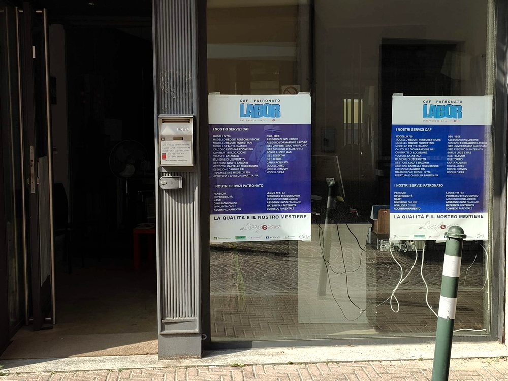
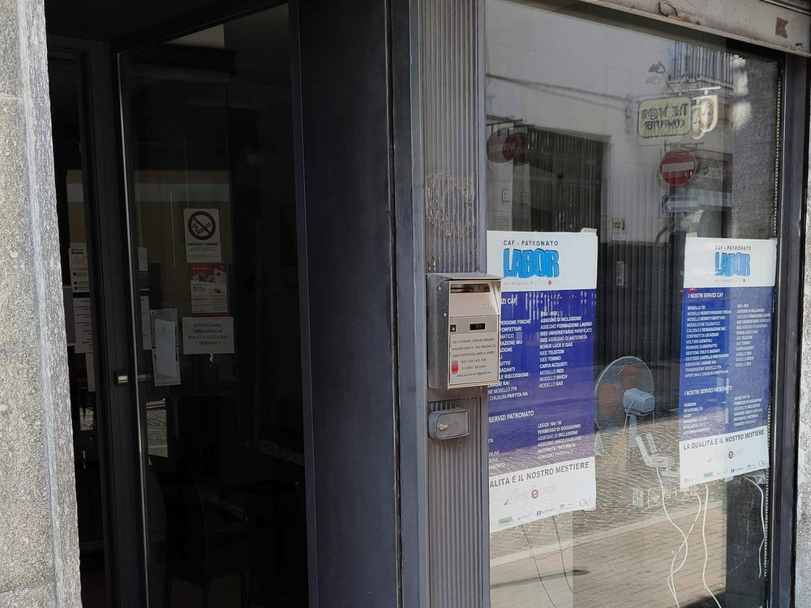

Come raggiungerci
Siamo in Via Nazario Sauro 25 a Orbassano, facilmente raggiungibili dai comuni della cintura sud di Torino. Sono disponibili posti auto nelle vicinanze.
Apri la mappa e ottieni le indicazioni stradali
Prenotare conviene
Riceviamo anche senza appuntamento negli orari di apertura, ma prenotando eviti l'attesa e ti mandiamo in anticipo l'elenco dei documenti da portare, così la pratica si chiude in un solo passaggio.
Scrivici su WhatsApp
Per informazioni veloci, per sapere quali documenti servono o per fissare un appuntamento puoi scriverci su WhatsApp negli orari di apertura: spesso è più comodo che telefonare.
Dove siamo



- Indirizzo
- Via Nazario Sauro 25, 10043 Orbassano (TO)
- Telefono
- 338 707 4911
- 389 823 7590
- Scrivici al 338 707 4911
- Scrivici al 389 823 7590
- centro.multiservizi.26@gmail.com
- Orari
- Lun-Ven 9:00-13:00 e 14:30-18:00